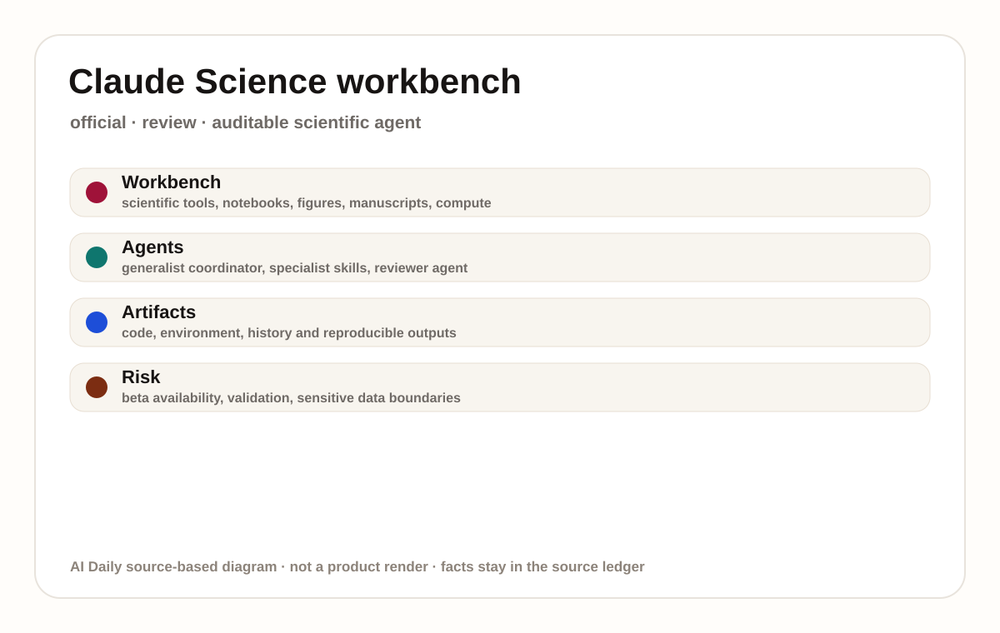
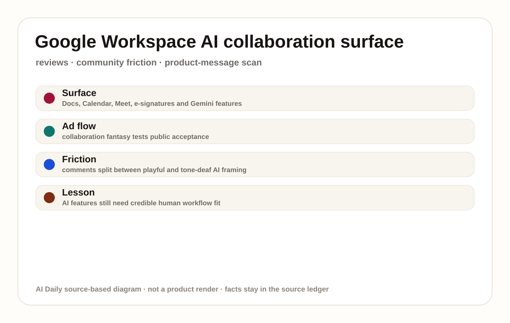
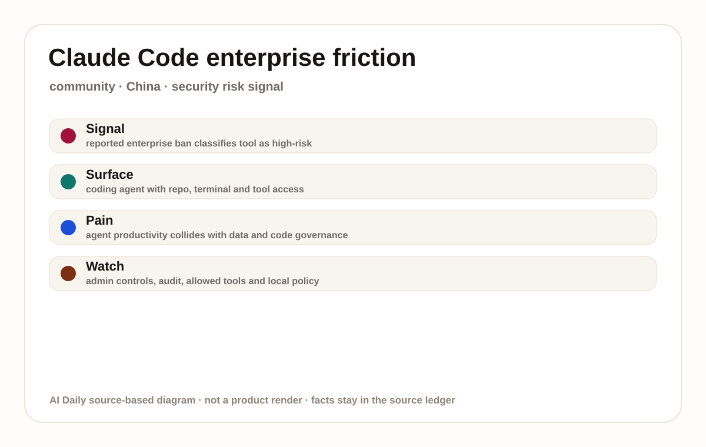
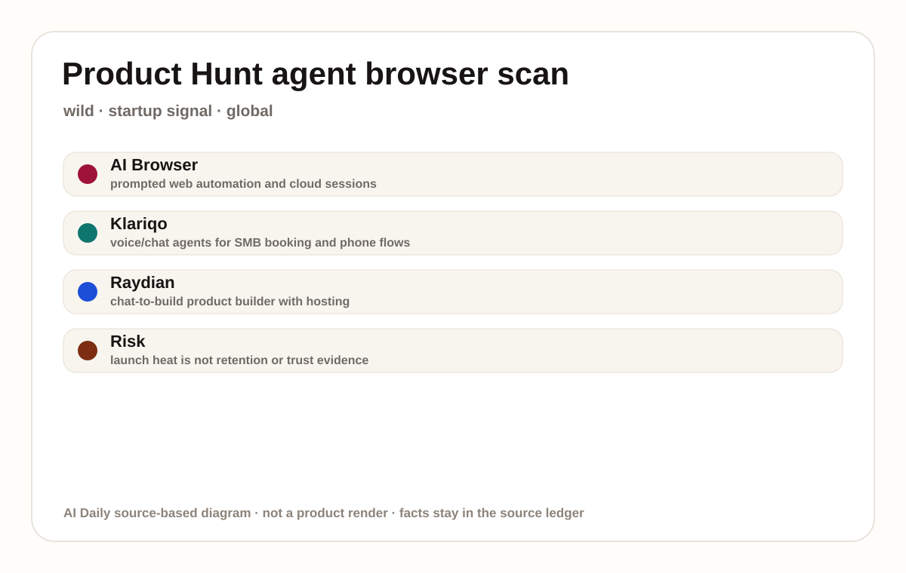
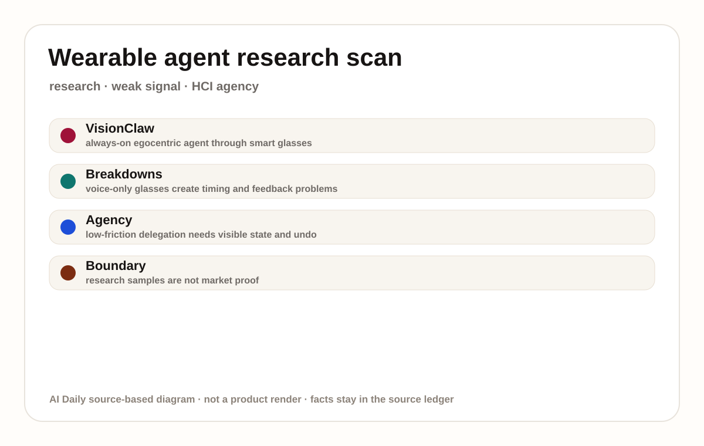
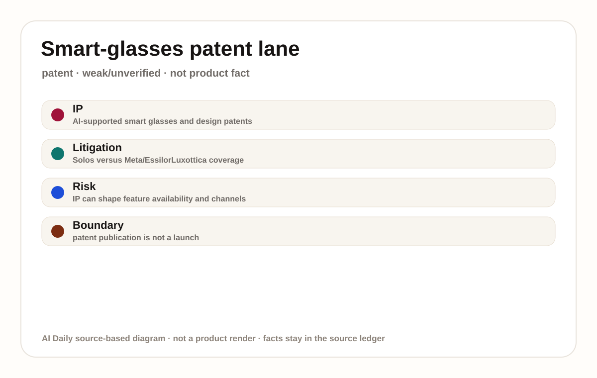
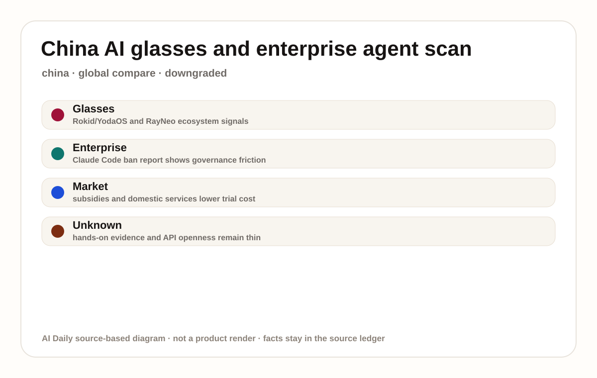
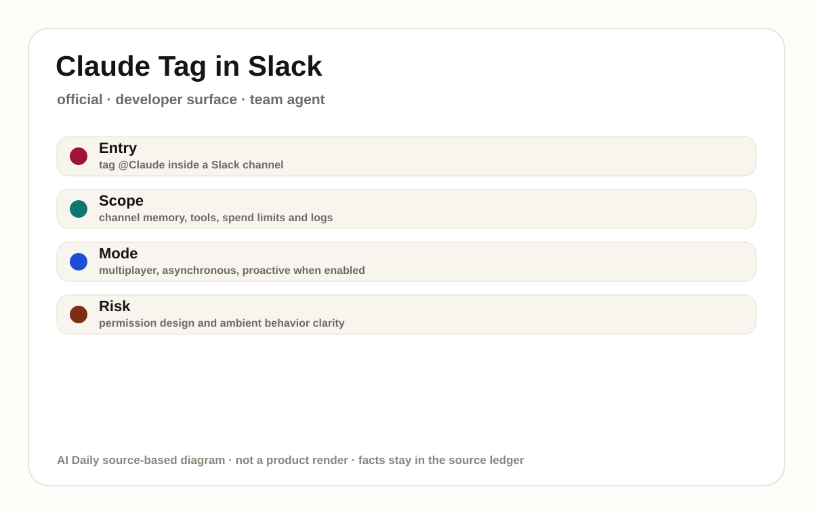

Claude Science 是面向科研人员的 AI workbench beta，不是普通聊天机器人。本期只采用来源明确披露的产品面：Claude app、macOS/Linux、本机或远程 SSH/HPC、Modal compute、60+ 科学 skills/connectors、genomics/single-cell/proteomics/structural biology/cheminformatics 工具、NVIDIA BioNeMo Agent Toolkit、reviewer agent。价格、地区、版本、硬件规格或 API 细节凡未出现在来源中，均写作 source not stated。它进入本期的原因是用户真实触碰到的入口发生变化：科研人员可以在同一环境里查文献、运行分析、生成图表、管理 compute，并保留可复现历史。
01
2026-07-04 · America/Toronto
AI Daily
AI Daily 2026-07-04：Agent 工作台开始接受治理测试
今天主线是治理型工作台：科研、Slack、Workspace、coding agent 和眼镜都在争入口。
Claude Science 的价值不只是能回答科学问题，而是能留下 code、environment、history 和 reviewer 检查。
Google 广告与 Alibaba/Claude Code 报道说明：AI 进入真实组织后，边界和信任比功能数量更快变成核心体验。
AI workbenchagent UXClaude ScienceClaude Tagenterprise governanceGoogle Workspacesmart glassesChina scan
来源： 封面原文

02
今日导航
先看结构，再看证据
今天按八条线读：官方产品、媒体评测、社区摩擦、野生产品、研究、专利、中国与海外。
03
大厂官方
大厂官方
Official Desk / 大厂官方
confirmed product · confirmed product · official beta · review coverage
Claude Science 把科学家的 agent 从聊天框推进可审计工作台
04
Official Desk / 大厂官方
大厂官方
confirmed product · confirmed product · official beta · review coverage
2026-06-30 official beta; 2026-07-03 review coverage
Claude Science 把科学家的 agent 从聊天框推进可审计工作台
产品: Claude Science. Claude Science：面向科研人员的 AI workbench beta，不是普通聊天机器人。本条按 confirmed product 处理；规格、价格、地区和日期只采用来源明示信息，缺失处写 source not stated。
用户流程是：研究者在 macOS、Linux、本机、SSH、HPC login node 或 Modal 计算环境中打开 Claude Science，向协调 agent 描述任务，agent 调用 60+ curated skills/connectors、专业 agent 和 reviewer agent，生成代码、图、manuscript 与可追踪 history。这个流程的 HCI 重点不在“多一个 AI 按钮”，而在系统如何把上下文、权限、执行状态和结果回写到用户正在工作的地方。若任务失败，产品需要把失败原因、可重试路径、人工接管或撤销动作留在同一个界面。
来源支持的系统栈包括：Claude app、macOS/Linux、本机或远程 SSH/HPC、Modal compute、60+ 科学 skills/connectors、genomics/single-cell/proteomics/structural biology/cheminformatics 工具、NVIDIA BioNeMo Agent Toolkit、reviewer agent。官方披露 beta 面向 Claude Pro、Max、Team、Enterprise；可生成 3D protein structures、genome browser tracks、chemical structures、figures 和 manuscripts；可 fork session；申请项目最高 $30,000 credits 与 Modal 最高 $2,000 compute 的细节来自官方说明。未披露的模型路由、企业审计字段、完整权限矩阵、数据保存周期、区域上线、价格稳定性和 SLA 为 source not stated。本期不从营销页推断任何未写明的性能数字。
具体使用场景包括：single-cell RNA sequencing analysis、CRISPR screen design、protein structure prediction、cheminformatics、long-form computational review、glioma molecular epidemiology、figure/manuscript iteration。这些场景都要求产品把 agent 的工作拆成可检查的中间状态，而不是只给一个最后答案。对用户来说，关键体验是少切换、少解释、少复制粘贴，同时保留审计、改写、暂停和重做的控制。
它解决的痛点是：科研工作流被 PubMed、Jupyter、R、cluster terminal、不同数据库 schema、文件格式和可视化工具切碎，结果难复现、难审计、难在数月后解释来源。过去用户往往要在聊天框、文档、终端、浏览器、数据库和团队沟通工具之间来回搬运上下文；现在产品试图把上下文拉到一个工作台或协作入口里。但这也提高了错误成本，因为 agent 拿到的权限越多，越需要清楚说明它能读什么、能写什么、是否会调用外部系统。
The Verge 将它放在 Anthropic 进入 drug-development/AI-for-science 的语境里；官方引用 Manifold Bio、Allen Institute 与 UCSF Brain Tumor Center 使用案例。普通研究者长期反馈仍不足，source not stated。这部分按 confirmed product 处理，不能当作全量用户满意度。没有直接用户 quote 的地方写 source not stated；媒体或社区摩擦只用于风险判断。
新技术/新界面在于：generalist coordinating agent + specialist agents + reviewer agent + reproducible artifacts + compute orchestration，把科研 agent 从回答问题变成可审计生产环境。它把 AI 从单轮回答推向“可追踪工作流”：有计划、有工具、有可复现 artifact、有状态反馈，也有权限边界。产品团队需要把这些技术能力翻译成用户看得懂的状态，而不是把复杂度塞进后台。
可用性：官方称 beta 面向 Claude Pro、Max、Team、Enterprise；Team/Enterprise 需要 admin enable；研究项目申请截止 July 15, 2026，通知 July 31，项目运行 September 1 to December 1, 2026。若来源没有明确说明国家、计划层级、下载入口、管理员开关、硬件平台或 beta 资格，本期不补猜。对读者的实际建议是先看官方入口和管理员配置要求，再看是否有独立评测或社区故障反馈。
限制和未知：科学正确性仍需要独立验证；敏感数据只发送必要 context 的说法需要组织内部安全审查；医疗/药物发现结果不能直接当临床证据；Windows、价格、区域和完整合规细节 source not stated。此外，跨工具 agent 的共性风险包括权限过宽、错误执行、上下文污染、结果不可复现、审计不足和用户不知道系统何时在行动。本期把这些风险放进产品判断，而非作为抽象趋势评论。
产品判断：这是今天最强 product dossier：它把 agent 的价值放在可复现 artifact 和计算流程里，而不是聊天体验里。科研软件团队应关注 audit trail、session fork、reviewer agent 和 compute permission，而不是只问模型分数。它值得关注的标准不是发布声量，而是是否让用户用更少步骤完成具体任务，同时让权限、状态、证据和撤销保持可见。若后续来源无法证明真实工作流稳定，它应继续降级为 watch signal。
05
媒体/评测
媒体/评测
Review Desk / 媒体与评测
review/community friction · review/community friction · product-message scan
Google Workspace 独立日广告不是新产品，但暴露了协作 AI 的信任摩擦
06
Review Desk / 媒体与评测
媒体/评测
review/community friction · review/community friction · product-message scan
2026-07-04 review/community scan
Google Workspace 独立日广告不是新产品，但暴露了协作 AI 的信任摩擦
产品: Google Workspace AI collaboration surface. Google Workspace AI collaboration surface：Google Workspace 内 AI 协作功能的广告/产品叙事扫描，不是新 SKU。本条按 review/community friction 处理；规格、价格、地区和日期只采用来源明示信息，缺失处写 source not stated。

Google Workspace AI collaboration surface 是Google Workspace 内 AI 协作功能的广告/产品叙事扫描，不是新 SKU。本期只采用来源明确披露的产品面：Google Workspace、Docs、Calendar、Meet、e-signatures、Gemini、Help me visualize/AI media feature语境、YouTube/Instagram/Bluesky 反应。价格、地区、版本、硬件规格或 API 细节凡未出现在来源中，均写作 source not stated。它进入本期的原因是用户真实触碰到的入口发生变化：TechCrunch 描述广告中的 Docs、Calendar、Meet、e-signatures、Gemini note-taking 与 help me visualize 等功能如何被包装成协作流程。
用户流程是：广告里的用户通过 text messages 催稿，文档中 suggest edits，Calendar 安排 meeting，Meet 开会，e-signature 完成签署，Gemini 做会议笔记和 chatbot 建议，AI visualization 生成 seal 概念。这个流程的 HCI 重点不在“多一个 AI 按钮”，而在系统如何把上下文、权限、执行状态和结果回写到用户正在工作的地方。若任务失败，产品需要把失败原因、可重试路径、人工接管或撤销动作留在同一个界面。
来源支持的系统栈包括：Google Workspace、Docs、Calendar、Meet、e-signatures、Gemini、Help me visualize/AI media feature语境、YouTube/Instagram/Bluesky 反应。本期不把广告画面当作新功能说明；Workspace AI 的具体 plan、regions、功能 gating、企业数据边界和模型版本需要回到 Google 官方文档逐项确认。未披露的模型路由、企业审计字段、完整权限矩阵、数据保存周期、区域上线、价格稳定性和 SLA 为 source not stated。本期不从营销页推断任何未写明的性能数字。
具体使用场景包括：协作文档起草、会议安排、会议记录、图像概念生成、文档权限请求、签署流程和团队异步推进。这些场景都要求产品把 agent 的工作拆成可检查的中间状态，而不是只给一个最后答案。对用户来说，关键体验是少切换、少解释、少复制粘贴，同时保留审计、改写、暂停和重做的控制。
它解决的痛点是：协作软件真正的痛点不是“能不能写”，而是多人版本、权限请求、会议转写、谁负责下一步、AI 建议是否侵入人类判断。过去用户往往要在聊天框、文档、终端、浏览器、数据库和团队沟通工具之间来回搬运上下文；现在产品试图把上下文拉到一个工作台或协作入口里。但这也提高了错误成本，因为 agent 拿到的权限越多，越需要清楚说明它能读什么、能写什么、是否会调用外部系统。
TechCrunch 记录 YouTube/Instagram response mostly positive，而 Bluesky 更批评；The Verge 也强调 public discomfort。具体可量化 sentiment 分布 source not stated。这部分按 review/community friction 处理，不能当作全量用户满意度。没有直接用户 quote 的地方写 source not stated；媒体或社区摩擦只用于风险判断。
新技术/新界面在于：产品信号不是新模型，而是 AI collaboration 的社会接受度测试：用户愿不愿意让 AI 进入历史、政治、写作和会议协作这种高语境场景。它把 AI 从单轮回答推向“可追踪工作流”：有计划、有工具、有可复现 artifact、有状态反馈，也有权限边界。产品团队需要把这些技术能力翻译成用户看得懂的状态，而不是把复杂度塞进后台。
可用性：Google Workspace AI 功能可用性以 Google 官方 Workspace 页面和管理员文档为准；广告发布日期为 2026-07-04 报道语境。若来源没有明确说明国家、计划层级、下载入口、管理员开关、硬件平台或 beta 资格，本期不补猜。对读者的实际建议是先看官方入口和管理员配置要求，再看是否有独立评测或社区故障反馈。
限制和未知：广告不能证明真实团队流程更好；用户对 AI 参与创作/政治叙事的反感可能污染原本合理的协作功能；功能是否在企业域默认启用 source not stated。此外，跨工具 agent 的共性风险包括权限过宽、错误执行、上下文污染、结果不可复现、审计不足和用户不知道系统何时在行动。本期把这些风险放进产品判断，而非作为抽象趋势评论。
产品判断：这是 review lane 的好材料：它显示 AI 协作产品的失败不一定来自功能缺失，也可能来自叙事不可信。产品团队应把 AI 的参与边界写进流程，而不是只把 AI 功能剪进广告。它值得关注的标准不是发布声量，而是是否让用户用更少步骤完成具体任务，同时让权限、状态、证据和撤销保持可见。若后续来源无法证明真实工作流稳定，它应继续降级为 watch signal。
07
社区摩擦
社区摩擦
Community Friction / 社区摩擦
review/community friction · review/community friction · China enterprise security signal
Alibaba 禁用 Claude Code 报道提示：coding agent 的企业摩擦正在从能力转向治理
08
Community Friction / 社区摩擦
社区摩擦
review/community friction · review/community friction · China enterprise security signal
2026-07-04 media/community friction
Alibaba 禁用 Claude Code 报道提示：coding agent 的企业摩擦正在从能力转向治理
产品: Claude Code enterprise risk surface. Claude Code enterprise risk surface：coding agent 的企业治理摩擦扫描。本条按 review/community friction 处理；规格、价格、地区和日期只采用来源明示信息，缺失处写 source not stated。

Claude Code enterprise risk surface 是coding agent 的企业治理摩擦扫描。本期只采用来源明确披露的产品面：Claude Code 产品、docs、repo/file/terminal 操作语境、企业 allow/ban policy、source-code governance、China enterprise/security environment。价格、地区、版本、硬件规格或 API 细节凡未出现在来源中，均写作 source not stated。它进入本期的原因是用户真实触碰到的入口发生变化：TechCrunch 报道 Alibaba reportedly classified Claude Code as high-risk software；这不是 Claude Code 新功能发布，但直接影响 coding agent 在企业中的默认可用性。
用户流程是：开发者通常在 repo/terminal/IDE 或 CLI 中委派 coding task，agent 读取项目、修改文件、运行命令、生成 diff；企业安全团队则评估源代码、凭证、数据出境、日志、模型供应商和工具调用风险。这个流程的 HCI 重点不在“多一个 AI 按钮”，而在系统如何把上下文、权限、执行状态和结果回写到用户正在工作的地方。若任务失败，产品需要把失败原因、可重试路径、人工接管或撤销动作留在同一个界面。
来源支持的系统栈包括：Claude Code 产品、docs、repo/file/terminal 操作语境、企业 allow/ban policy、source-code governance、China enterprise/security environment。本期不推断 Alibaba 内部 policy 文档全文、禁用范围、执行技术手段、是否涉及所有团队或所有 Anthropic 产品；这些为 source not stated。未披露的模型路由、企业审计字段、完整权限矩阵、数据保存周期、区域上线、价格稳定性和 SLA 为 source not stated。本期不从营销页推断任何未写明的性能数字。
具体使用场景包括：企业代码生成、bug 修复、测试运行、代码审查、迁移、重构、文档生成、数据查询脚本和安全修复。这些场景都要求产品把 agent 的工作拆成可检查的中间状态，而不是只给一个最后答案。对用户来说，关键体验是少切换、少解释、少复制粘贴，同时保留审计、改写、暂停和重做的控制。
它解决的痛点是：coding agent 能力越强，越容易碰到企业风控红线：私有代码能否外发、secret 是否会被读到、自动命令能否破坏环境、日志是否可审计。过去用户往往要在聊天框、文档、终端、浏览器、数据库和团队沟通工具之间来回搬运上下文；现在产品试图把上下文拉到一个工作台或协作入口里。但这也提高了错误成本，因为 agent 拿到的权限越多，越需要清楚说明它能读什么、能写什么、是否会调用外部系统。
该信号来自 TechCrunch in brief 报道和媒体/社区传播；没有 Alibaba 官方英文公告或完整内部通知可验证，source not stated。这部分按 review/community friction 处理，不能当作全量用户满意度。没有直接用户 quote 的地方写 source not stated；媒体或社区摩擦只用于风险判断。
新技术/新界面在于：新界面问题是 governance UX：coding agent 需要向管理员和开发者同时展示 repo 权限、工具权限、命令执行、模型边界和数据流向。它把 AI 从单轮回答推向“可追踪工作流”：有计划、有工具、有可复现 artifact、有状态反馈，也有权限边界。产品团队需要把这些技术能力翻译成用户看得懂的状态，而不是把复杂度塞进后台。
可用性：Claude Code 产品页面和 docs 可访问；Alibaba 端禁用范围、时间线、地区和替代工具 source not stated。若来源没有明确说明国家、计划层级、下载入口、管理员开关、硬件平台或 beta 资格，本期不补猜。对读者的实际建议是先看官方入口和管理员配置要求，再看是否有独立评测或社区故障反馈。
限制和未知：单个企业禁用不能代表全市场，但它足以提示 governance 已成为 coding agent 的购买门槛；没有更完整社区样本前，不应扩大成行业结论。此外，跨工具 agent 的共性风险包括权限过宽、错误执行、上下文污染、结果不可复现、审计不足和用户不知道系统何时在行动。本期把这些风险放进产品判断，而非作为抽象趋势评论。
产品判断：这条应作为 community friction，而非产品失败。真实问题是 coding agent 需要企业级权限设计、secret 防护、审计、私有部署/区域承诺和清楚的停用路径。它值得关注的标准不是发布声量，而是是否让用户用更少步骤完成具体任务，同时让权限、状态、证据和撤销保持可见。若后续来源无法证明真实工作流稳定，它应继续降级为 watch signal。
09
野生信号
野生信号
Wild Desk / 野生信号
startup signal · startup signal · wild source-lane scan
Product Hunt wild lane：AI Browser、Klariqo、Raydian 显示 agent 产品正在收窄到具体工作
10
Wild Desk / 野生信号
野生信号
startup signal · startup signal · wild source-lane scan
2026-07-04 Product Hunt scan
Product Hunt wild lane：AI Browser、Klariqo、Raydian 显示 agent 产品正在收窄到具体工作
产品: Product Hunt agent wild scan. Product Hunt agent wild scan：source-lane scan。本条按 startup signal 处理；不把弱信号写成确认产品事实。

Product Hunt agent wild scan 是 source-lane scan，不是确认单品发布。扫描对象：Product Hunt AI topic、AI Agents category、AI Browser、Klariqo、Raydian 等近期 AI agent/product-builder 条目。本期把它标成 startup signal，因为证据更多来自媒体、社区、论文、专利或行业页面。
可观察的交互信号是：AI Browser 把 prompt 转成 web automation/cloud session，Klariqo 把 voice/chat agent 放进 SMB booking 和 phone flow，Raydian 把 chat-to-build、visual editing 和 hosting 连成产品创建入口。没有足够来源支持的产品流程不做推断；缺失的规格、价格、地区、用户 quote 和上线日期均为 source not stated。
来源支持的材料包括：Product Hunt 页面支持 AI agent、AI coding agents、AI browser automation、voice/chat agents、product builders、reviews/ratings/use-by graph 等市场信号。这只能说明方向或摩擦存在，不能证明完整产品体验已经成熟。
可能影响的使用场景：增长运营、网页自动化、服务业预约、电话接线、AI 建站、全栈 app 原型和非工程用户的 prompt-to-workflow。这些场景需要继续观察是否有官方文档、真实评测、社区反馈或可购买入口支撑。
扫描到的痛点：“通用 agent”卖点开始变弱，用户更关心能否替自己完成某个固定场景并减少配置。本期关注的是用户界面、权限、反馈和工作流的实际阻力，而不是公司叙事。
Product Hunt 热度、rating 和 launch wording 是 startup/community signal，不是留存或收入证据；缺少独立长期评测。
新技术/新信号：agent 产品从“我能做任何事”转向“浏览器自动化、电话预约、chat-to-build”等窄入口。
可用性：各产品可访问性、价格、地区、数据政策和集成清单需逐项看官方页；Product Hunt 本身只证明公开展示和社区互动。
限制和未知：launch 页面可能过度承诺，AI browser automation 涉及 CAPTCHA、账号安全和网站 ToS，voice agent 涉及电话合规和误接单，chat-to-build 涉及生成代码可维护性。
产品判断：wild lane 可提升为产品 dossier 的条件是：有官方文档、稳定价格、真实 case、社区故障样本和可复现 demo。今天保留为 startup signal。
11
论文
论文
Research Watch / 论文
research signal · research signal · downgraded HCI watch
研究 lane：连续感知眼镜 agent 仍是实验室信号，不能升级成产品事实
12
Research Watch / 论文
论文
research signal · research signal · downgraded HCI watch
2026 research scan
研究 lane：连续感知眼镜 agent 仍是实验室信号，不能升级成产品事实
产品: Wearable agent research scan. Wearable agent research scan：source-lane scan。本条按 research signal 处理；不把弱信号写成确认产品事实。

Wearable agent research scan 是 source-lane scan，不是确认单品发布。扫描对象：VisionClaw always-on smart-glasses agent 论文、smart-glasses conversational breakdown 论文与 CHI/HCI 研究语境。本期把它标成 research signal，因为证据更多来自媒体、社区、论文、专利或行业页面。
可观察的交互信号是：研究原型通过眼镜获得第一人称环境，用户语音委派任务，agent 将环境理解、工具调用和后续动作连接起来；breakdown 研究提醒无屏/少屏交互会在时机、误解和反馈不足上失败。没有足够来源支持的产品流程不做推断；缺失的规格、价格、地区、用户 quote 和上线日期均为 source not stated。
来源支持的材料包括：Meta Ray-Ban smart glasses、Gemini Live、OpenClaw、controlled lab study/autobiographical deployment、voice-only/non-display smart-glasses interaction analysis。这只能说明方向或摩擦存在，不能证明完整产品体验已经成熟。
可能影响的使用场景：维修、购物、烹饪、会议、生活记录、无障碍、工业现场和实时翻译等潜在任务。这些场景需要继续观察是否有官方文档、真实评测、社区反馈或可购买入口支撑。
扫描到的痛点：手机/桌面 AI 需要用户解释环境，眼镜 agent 试图让系统直接看见；但 continuous perception 会引发旁观者同意、录制状态和错误执行问题。本期关注的是用户界面、权限、反馈和工作流的实际阻力，而不是公司叙事。
研究样本不是市场反馈；论文样本量、实验设置和自传式部署不能代表普通消费者长期佩戴意愿。
新技术/新信号：egocentric perception + general-purpose agent execution，把环境上下文变成任务上下文。
可用性：研究论文可读；没有对应商业可购买产品、价格或上线地区。
限制和未知：续航、热量、网络依赖、隐私提示、旁观者同意、失败恢复和误执行成本仍未被消费级产品证明。
产品判断：作为 research watch 保留。产品团队现在能学到的是 state indicator、context preview、pause、undo 和 consent 设计，而不是马上复制原型。
13
专利
专利
Patent Watch / 专利
patent signal · patent signal · explicitly speculative
专利 lane：智能眼镜 IP 活跃，但今天没有可升级的上市事实
14
Patent Watch / 专利
专利
patent signal · patent signal · explicitly speculative
2026 patent scan
专利 lane：智能眼镜 IP 活跃，但今天没有可升级的上市事实
产品: Smart-glasses patent lane scan. Smart-glasses patent lane scan：source-lane scan。本条按 patent signal 处理；不把弱信号写成确认产品事实。

Smart-glasses patent lane scan 是 source-lane scan，不是确认单品发布。扫描对象：AI-supported smart glasses 专利、AI Smart Glasses GS1 外观设计、Rokid WIPO profile、Solos 与 Meta/EssilorLuxottica 专利诉讼报道。本期把它标成 patent signal，因为证据更多来自媒体、社区、论文、专利或行业页面。
可观察的交互信号是：专利没有真实用户流程，只能提示医疗/工业/外观/传感/显示方向；诉讼可能影响授权、渠道、功能或成本，但不能证明某项功能已上线。没有足够来源支持的产品流程不做推断；缺失的规格、价格、地区、用户 quote 和上线日期均为 source not stated。
来源支持的材料包括：patent publication pages、design patent、WIPO company/IP profile、smart-glasses litigation coverage。这只能说明方向或摩擦存在，不能证明完整产品体验已经成熟。
可能影响的使用场景：产品研究、竞品风险、硬件路线图、光学/音频/传感/外观设计边界判断。这些场景需要继续观察是否有官方文档、真实评测、社区反馈或可购买入口支撑。
扫描到的痛点：硬件团队如果只看发布会，很容易忽略一个品类在上市前已被 IP 和诉讼塑形。本期关注的是用户界面、权限、反馈和工作流的实际阻力，而不是公司叙事。
专利没有用户原声；诉讼报道也不等于消费者反馈。
新技术/新信号：专利聚集在 AI-supported eyewear、医疗/工业辅助、设计形态和 smart-glasses platform claim 周围。
可用性：专利公开不等于上市；WIPO profile 不等于所有地区可购买；诉讼不等于判决。
限制和未知：权利要求有效性、实施状态、法院结果、授权费用、用户影响和终端规格均 source not stated。
产品判断：只作为 patent watch。它提醒产品团队做 IP 风险扫描，但不能替代官方产品页、评测和用户证据。
15
中国
中国
China / Global Compare
weak/unverified · weak/unverified · China source-lane scan
中国 lane：AI 眼镜市场升温与 Claude Code 企业禁用共同指向治理型入口
16
China / Global Compare
中国
weak/unverified · weak/unverified · China source-lane scan
2026-07 China/global scan
中国 lane：AI 眼镜市场升温与 Claude Code 企业禁用共同指向治理型入口
产品: China AI glasses and enterprise agent scan. China AI glasses and enterprise agent scan：source-lane scan。本条按 weak/unverified 处理；不把弱信号写成确认产品事实。

China AI glasses and enterprise agent scan 是 source-lane scan，不是确认单品发布。扫描对象：36氪 AI 眼镜报道、WIPO Rokid profile、AI Smart Glasses GS1 外观设计专利、Alibaba reportedly bans Claude Code 的企业治理信号。本期把它标成 weak/unverified，因为证据更多来自媒体、社区、论文、专利或行业页面。
可观察的交互信号是：眼镜 lane 描述语音、显示、翻译、导航、会议和本地服务闭环；企业 agent lane 描述 coding agent 进入私有代码和工具权限后的风控阻力。没有足够来源支持的产品流程不做推断；缺失的规格、价格、地区、用户 quote 和上线日期均为 source not stated。
来源支持的材料包括：36氪中国 AI 眼镜市场报道、WIPO Rokid 专利/商标/出货与部署资料、AI Smart Glasses 设计专利、Claude Code 企业风控报道。这只能说明方向或摩擦存在，不能证明完整产品体验已经成熟。
可能影响的使用场景：翻译字幕、会议记录、导览、工业提示、本地生活服务、地图/支付/办公连接、企业代码生成和安全策略。这些场景需要继续观察是否有官方文档、真实评测、社区反馈或可购买入口支撑。
扫描到的痛点：中国市场的 AI 硬件和企业 agent 都在争入口，但入口不是越靠前越好；用户和组织需要知道谁在感知、谁在执行、权限归谁。本期关注的是用户界面、权限、反馈和工作流的实际阻力，而不是公司叙事。
今天材料更多是媒体/行业和单条企业禁用报道，缺少足够长期用户佩戴、企业管理员访谈和售后数据。
新技术/新信号：AIOS-native glasses 和 governed coding agent 都把 AI 产品从 app 功能推向系统入口与权限治理。
可用性：各眼镜型号、系统/API、地区、价格和售后需回官方页逐项确认；Claude Code 在 Alibaba 的禁用范围 source not stated。
限制和未知：AIOS 叙事容易大于 hands-on 证据；补贴和销量不是满意度；单个企业禁用不是行业结论。
产品判断：中国 lane 今天应降级但不能忽略。它说明 AI 入口竞争的下一步是治理：眼镜要治理感知与外观信任，coding agent 要治理代码和工具权限。
17
海外
海外
Global Signals
developer surface · developer surface · official beta · team collaboration agent
Claude Tag 把团队 agent 放进 Slack 频道，并把身份、记忆和成本做成管理面
18
Global Signals
海外
developer surface · developer surface · official beta · team collaboration agent
2026-06-23 official beta
Claude Tag 把团队 agent 放进 Slack 频道，并把身份、记忆和成本做成管理面
产品: Claude Tag. Claude Tag：面向团队的 Slack 内 agent beta。本条按 developer surface 处理；规格、价格、地区和日期只采用来源明示信息，缺失处写 source not stated。

Claude Tag 是面向团队的 Slack 内 agent beta。本期只采用来源明确披露的产品面：Slack app、Claude Enterprise/Team beta、channel-scoped memory、tools/connectors/codebases、token spend limit、administrator logs、ambient behavior switch、Opus 4.8。价格、地区、版本、硬件规格或 API 细节凡未出现在来源中，均写作 source not stated。它进入本期的原因是用户真实触碰到的入口发生变化：任何人在授权频道里 tag @Claude，把代码、指标、支持工单或跨工具任务委派给一个共享 channel identity。
用户流程是：管理员把 Claude Tag 与 Slack workspace 配对，授予特定 channel、tool、data 和 codebase 访问权限，设置月度 token spend 与日志；用户在 thread 里 @Claude，下达自然语言任务，Claude 分阶段执行并在 thread 中回复产物。这个流程的 HCI 重点不在“多一个 AI 按钮”，而在系统如何把上下文、权限、执行状态和结果回写到用户正在工作的地方。若任务失败，产品需要把失败原因、可重试路径、人工接管或撤销动作留在同一个界面。
来源支持的系统栈包括：Slack app、Claude Enterprise/Team beta、channel-scoped memory、tools/connectors/codebases、token spend limit、administrator logs、ambient behavior switch、Opus 4.8。官方披露 Claude Tag replaces existing Claude in Slack app；可设置 organization/channel spend limit；可查看 @Claude 做了什么和谁请求；不同 use case 的 Claude identity 与 memory 可分离。未披露的模型路由、企业审计字段、完整权限矩阵、数据保存周期、区域上线、价格稳定性和 SLA 为 source not stated。本期不从营销页推断任何未写明的性能数字。
具体使用场景包括：代码任务、产品指标查询、支持 ticket、bug root cause、异步 follow-up、跨 channel 信息提示、团队多人接续同一 agent 工作。这些场景都要求产品把 agent 的工作拆成可检查的中间状态，而不是只给一个最后答案。对用户来说，关键体验是少切换、少解释、少复制粘贴，同时保留审计、改写、暂停和重做的控制。
它解决的痛点是：团队 AI 助手过去常被困在个人 chat 或单次任务里，缺少频道上下文、共享历史、管理员授权和组织成本控制。过去用户往往要在聊天框、文档、终端、浏览器、数据库和团队沟通工具之间来回搬运上下文；现在产品试图把上下文拉到一个工作台或协作入口里。但这也提高了错误成本，因为 agent 拿到的权限越多，越需要清楚说明它能读什么、能写什么、是否会调用外部系统。
官方称 Anthropic 内部 product team 65% code 由 internal Claude Tag 创建；这是供应商自述，应按官方产品证据处理，不当作独立 benchmark。这部分按 developer surface 处理，不能当作全量用户满意度。没有直接用户 quote 的地方写 source not stated；媒体或社区摩擦只用于风险判断。
新技术/新界面在于：channel-scoped agent identity、ambient update、multi-user memory 和 admin spend/log 控制共同形成团队 agent 的交互模型。它把 AI 从单轮回答推向“可追踪工作流”：有计划、有工具、有可复现 artifact、有状态反馈，也有权限边界。产品团队需要把这些技术能力翻译成用户看得懂的状态，而不是把复杂度塞进后台。
可用性：Claude Enterprise 和 Team customers beta；从 Slack 开始，未来更广泛可用目标未给具体时间；migration credit 和 30-day opt-in 来源于官方说明。若来源没有明确说明国家、计划层级、下载入口、管理员开关、硬件平台或 beta 资格，本期不补猜。对读者的实际建议是先看官方入口和管理员配置要求，再看是否有独立评测或社区故障反馈。
限制和未知：ambient agent 很容易被用户误读成“总在监听”；频道记忆可能带来 context bleed；工具权限和 private channel 边界需要管理员持续校准。此外，跨工具 agent 的共性风险包括权限过宽、错误执行、上下文污染、结果不可复现、审计不足和用户不知道系统何时在行动。本期把这些风险放进产品判断，而非作为抽象趋势评论。
产品判断：Claude Tag 的产品意义是把 agent 从个人效率工具改造成团队成员。成败取决于管理员是否能把身份、记忆、花费和日志解释给非技术用户。它值得关注的标准不是发布声量，而是是否让用户用更少步骤完成具体任务，同时让权限、状态、证据和撤销保持可见。若后续来源无法证明真实工作流稳定，它应继续降级为 watch signal。
19
Watchlist
下一轮扫描
明天继续盯这些入口变化
01
Claude Science beta 是否能在真实 lab 中稳定保留可复现 artifact，并让 PI/安全团队理解数据边界。
02
Claude Tag 的 ambient 行为、频道记忆和 spend log 是否能让非技术团队放心地把 agent 当团队成员。
03
Claude Code 企业禁用报道是否扩散成更广泛的 coding-agent governance 采购门槛。
04
Google Workspace AI 的广告争议是否促使协作产品更明确地区分 AI 起草、建议、记录和人类决策。
05
Product Hunt 的 AI Browser、Klariqo、Raydian 等 narrow-agent 信号是否能拿出独立评测和留存证据。
06
中国 AI 眼镜市场信号是否出现可复现 API、隐私提示、真实日用评测和售后数据。
20
来源索引
可追溯证据
正文每个话题都有来源；这里是快速跳转。
sourceAnthropic: Claude Science workbenchsourceClaude product page: Claude SciencesourceThe Verge: Anthropic wants to develop its own drugssourceNVIDIA BioNeMo Agent ToolkitsourceAnthropic: Introducing Claude TagsourceClaude product page: @ClaudesourceClaude Tag docs overviewsourceTechCrunch: Google Workspace AI commercialsourceThe Verge: Google AI commercial responsesourceGoogle Workspace AIsourceGoogle Workspace YouTube commercialsourceTechCrunch: Alibaba reportedly bans Claude CodesourceClaude Code product pagesourceClaude Code docssourceProduct Hunt: Artificial Intelligence topicsourceProduct Hunt: AI Agents categorysourceProduct Hunt: AI BrowsersourceProduct Hunt: KlariqosourceProduct Hunt: RaydiansourcearXiv: VisionClaw always-on AI agents through smart glassessourcearXiv: Conversational successes and breakdowns in smart glassessourceACM CHI 2026sourceGoogle Patents: AI-supported smart glassessourceGoogle Patents: AI Smart Glasses GS1 designsourceWIPO Global Awards 2026: RokidsourceAndroid Central: Solos smart-glasses patent lawsuitsource36氪：AI眼镜赛道全面起势
完整总表： sources.md